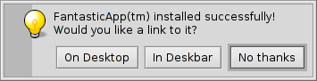

日本語
日本語 Français
Français Deutsch
Deutsch Italiano
Italiano Русский
Русский Español
Español Svenska
Svenska Українська
Українська 中文 ［中文］
中文 ［中文］ Português
Português Suomi
Suomi Slovenčina
Slovenčina English
English Haiku 固有のコマンドラインアプリケーション
Haiku 固有のコマンドラインアプリケーション
| 場所: | /boot/system/bin /boot/common/bin ~/config/bin |
Haiku に同梱されているすべてのコマンドラインアプリケーションは、/boot/system/bin または /boot/common/bin にあります。ユーザー自身が作成、または追加インストールしたコマンドラインアプリケーションは、~/config/bin に配置する必要があります。これらの場所は PATH 環境変数に含まれているため、自動的に検出されます。
以下は Haiku 固有のすべての CLI アプリケーションを網羅的にリストアップしたものではなく、一例として示すのにもっとも効果的なアプリケーションのいくつかに注目したに過ぎません。ほんの少し勇気を出して、ご自身で bin/ フォルダー内に何があるのか探索してみてください。--help という引数を付けてアプリケーションを実行すると、そのコマンドの使い方とさまざまなオプションすべてに関する説明が表示されます。
 属性に関するコマンド: listattr, catattr、addattr、rmattr、copyattr
属性に関するコマンド: listattr, catattr、addattr、rmattr、copyattr
これらのコマンドは、ファイルの属性を表示、出力、追加、削除するために使用します。現在のところ、これらのメタデータは BFS で初期化されたボリュームでのみ使用できることに注意してください。BFS 以外のファイルシステムにファイルを移動させると、すべての属性が失われてしまいます!
これらすべてのコマンドについては、ターミナルにおける属性というトピックで解説しています。
インデックスに関するコマンド: lsindex, mkindex, reindex, rmindex
これらのコマンドを使用することにより、インデックスの一覧表示やインデックスの生成・再生成、BFS のインデックスへ結びつけられた属性の削除が行えます。各ボリュームは固有のインデックスを保持しています。ファイルをあるボリュームから別のボリュームへコピーするときには、この点に注意してください。
これらのコマンドについては、インデックスというトピックで解説しています。
スクリプト処理に役立つコマンド
以下では、スクリプト処理 (Bash とスクリプト処理のトピックも合わせてご覧ください) に対して特に便利なコマンドラインツールを紹介します。
alert | alert は既定のアイコンと説明文、および 3 つのボタンの付いた典型的な警告ウィンドウを表示します。このコマンドは、クリックされたボタンのタイトルと終了ステータス (0 から始まります) を返します。下の例は、次の 1 行で作成されます: alert --idea "FantasticApp(tm) installed successfully! Would you like a link to it?" "On Desktop" "In Deskbar" "No thanks"  | |
filepanel | filepanel はファイルの読み込みまたは書き込みパネルを表示して、ユーザーがファイルや場所を選択できるようにします。戻り値として選択されたファイルまたはフォルダーのパスが得られます。既定のディレクトリを指定したり、ウィンドウのタイトルを設定したり、ファイルを保存するときの既定のファイル名および許可するファイルタイプを指定したりするための引数がいくつかあります。下は次のコマンドを実行した場合の例です: filepanel -s -t "Save your logfile" -d ~/config/settings -n Fantastic.log
| |
waitfor | waitfor はアプリケーションやスレッドの開始および終了を待つのにピッタリの方法です。 | |
query | query は、検索 (Find) パネルのコマンドラインバージョンです。ちなみに、検索語句をすばやく生成するには、検索パネルでクエリを生成し、 に切り替えて先頭と末尾にダブルクオート (") を追加し、その文字列全体をターミナルまたはスクリプトの query コマンドの後に貼り付けます。 |

ほかのコマンド
checkfs | checkfs はファイルシステムのエラーをチェックするための重要なツールです。実行は単にボリューム名またはデバイス名を追加するだけです。すると、すべてのファイルを走査して、可能な場合は不整合を修復します。 | |
open | open は非常に便利な小さいツールです。このコマンドを使うと任意のファイルを適切なアプリケーションで開くことや、シグネチャーを用いることで正確なパスを知ることなしにアプリケーションを起動できます。このコマンドは URL や「仮想的な」ディレクトリを用いることさえできます。ディレクトリの場合は . でカレントディレクトリを、.. で親ディレクトリを表すことができ、Tracker でそのフォルダーを開けます。 | |
desklink | desklink を使用すると、任意のファイルやフォルダー、クエリ、アプリケーションのアイコンを Deskbar トレイにインストールできます。特別なアクションを実行するためにアイコンを右クリックしたときに表示されるコンテキストメニューを定義するためのオプションもあります。例として、次のようにいろいろなオプション (1 行目の "/" はターミナルでの改行を表します) を付けて、スクリーンショット (screenshot) を Deskbar に追加してみましょう: desklink "cmd=Active window (2s):/bin/screenshot --window --border --delay 2" \ "cmd=Remove replicant:desklink --remove=screenshot" /bin/screenshot
|